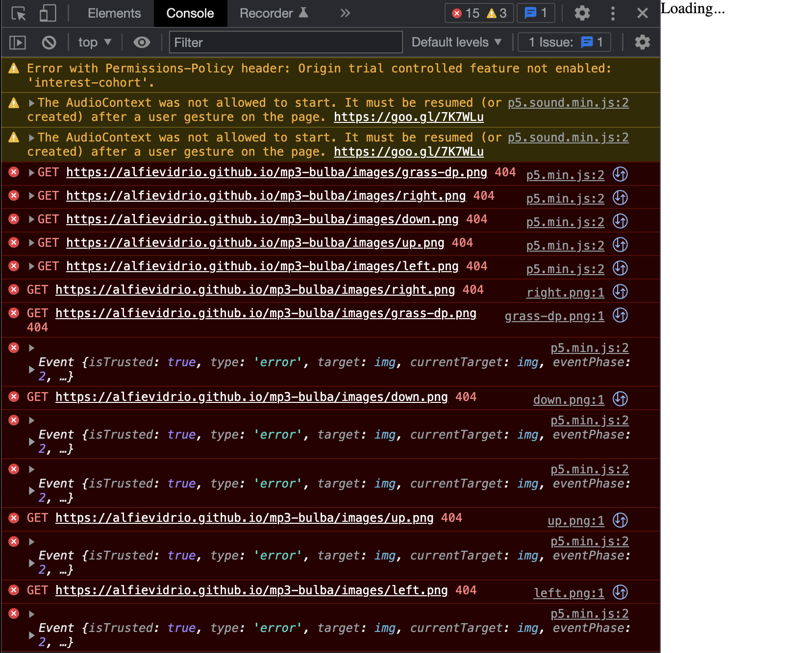

MP3 Writeup
Overview and Usage
For this project, I made an adaption of the classic
Pac-Man.
I kept the game simple so there are no ghosts chasing after Bulbasaur, the main
character. The overall mechanics remain the same and the game ends when
there are no remaining white dots to consume.
Live game can be found here.
See gif below for preview.
Development Process
- First, I found resources to aid in the development process. I found an existing
Pac-Man p5.js adaption.
I gathered pixel sprite resources from
Bulbapedia, an
online Pokémon database, and adapted them to suit the game.
-
Then, I began editing the code I found from frutose (the original developer). It took
some time to understand what the code was doing, but I eventually worked out what parts
I would need to build my adaption.
-
After isolating the parts of the code I actually needed, I began to import the sprites and
embedded them into the code. This took some work, as some of the sprites needed their positions
adjusted to appear in the correct spots. I ran into some difficulty setting a texture onto the
maze walls, but that was the only issue I had with adapting the code itself. See below for a
screenshot of what the maze looked like prior to working out how to get grass texture working:
-
The next portion involved actually getting the game deployed. I struggled to install p5.js, but
this was later resolved when the requirements for doing so were changed. Simply following the
instructions outlined in the Dev Toolchain activity helped through this portion of the process.
-
Actually getting the game to properly deploy was much harder. I kept getting a blank screen with
a “Loading…” message. Resolving this was simply a matter of embedding the sprites correctly (see
the Issue Deep-Dive). Once the sprites were being loaded, the process was essentially done.
Issue Deep-Dive
One of the largest issues that I had was with getting my game to correctly deploy.
I could not identify the issue until I opened up my console and saw the following 404 errors:

With the help of my capstone group, I was able to quickly figure out that the issue was with
importing the folder containing all of the sprites into the “dist" folder. Simply making sure
that the following lines of code were in my rollup.config.js solved the issue.
Ideas and Future Work
There are many ways I want to improve the game. For one, the game is rather boring without the
ghosts. In Pokémon, these could be any number of things so the possibilities are exciting. One possible idea
for ghosts are the "dangerous" Pokémon that appear at advanced stages of the main series games. The little
dots Bulbasaur consumes could be Pokéballs. The user could have a choice as to what Pokémon they want
to play as. The texture could be changed to be something with greater contrast to Bulbasaur, perhaps a
flowery meadow.
Kudos
I would like to give major kudos to frutose for creating the code I used for my project. I would also like to
give kudos to my HCDE capstone team members and close friends: Frannie Ello, Han Feng, and Ryan Bautista. They
provided support and guidance when I needed it most.
Return to Home Page